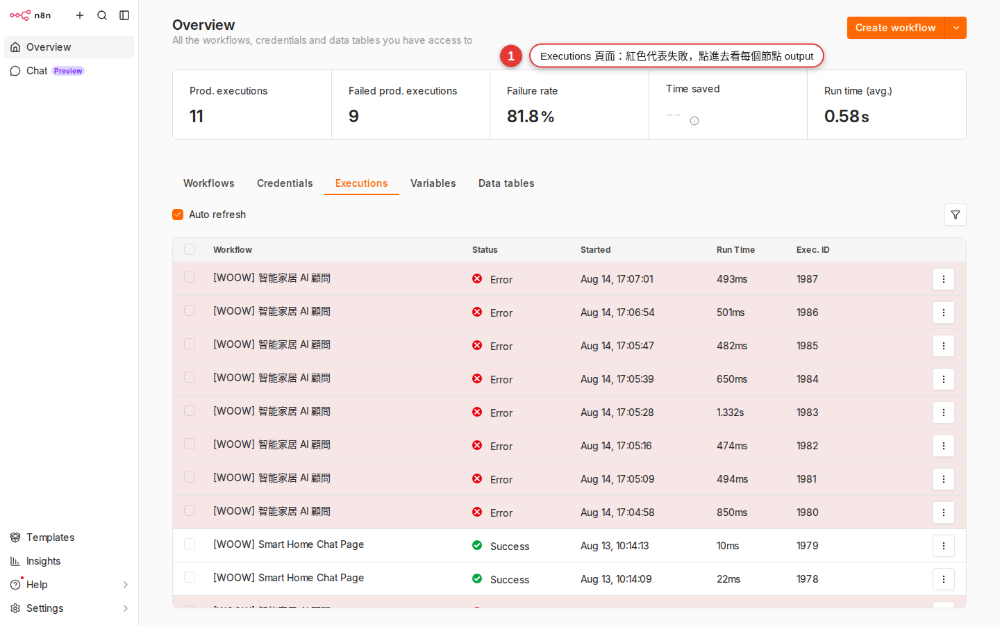

Error handling: error workflow / retry / wait
A live workflow fails overnight and nobody tells you automatically — unless you strung a net under it beforehand. This chapter covers three things: getting a Slack message when a whole workflow dies (Error workflow), letting a single node retry itself when it fails for a moment (Retry on fail), and pausing on purpose so you do not call an API fast enough to get blocked (the Wait node). Do all three and your workflow finally counts as one you can "just leave running".
Why error handling has to be in place before you go live
Chapter 10 showed you how to switch a workflow from Manual to Schedule so it runs by itself at 8:00 every morning; Chapter 16 showed you how to split, merge and batch. Your workflows look clever by now — until the day you notice:
- Monday, 9 am: your boss asks "why didn't last week's daily report go out?" You open it and find the schedule failed quietly last Wednesday, and nobody knew.
- Payday: the workflow calls an outside API 100 times at once, the other side rate-limits half of them, and half the staff never get their notification.
- Early one Saturday: the other system hiccups for 30 seconds, your workflow happens to run right then and fails once — when a single retry would have made it work.
n8n has a ready answer for each of the three: an error workflow covers the first, retry covers the third, wait covers the second. They are not an either/or — they are three layers of insurance a production workflow should have at the same time: tell you it broke, let a single point rescue itself, avoid hammering the other side. This chapter covers all three, and only after it are your workflows what you would call production grade.
What each of the three error-handling layers covers
Lay the three cards on the table first — the names look alike, but they work at completely different levels:
| Mechanism | Which level of failure it catches | What it does | When to use it |
|---|---|---|---|
| Error workflow | The whole workflow dies (any node fails for good) | Triggers another workflow built to handle errors (Slack you, for example) | Every production workflow should be bound to one |
| Retry on fail (node level) | One node fails (an HTTP Request dies, say) | That node retries itself N times, with a gap between tries | An API that acts up now and then, a network blip, mild rate limiting |
| The Wait node | It does not catch failures — it prevents them | The workflow stops here for X seconds / until a given time / until an external callback | Avoiding a rate limit from calling too fast, spacing out notifications, waiting for the other system to finish |
How they relate: Wait is prevention beforehand, Retry is self-rescue in the moment, and the error workflow is recovery afterwards. A live workflow should have all three; drop one and you lose a line of defense.
What an error workflow is — a workflow built to catch failures
An error workflow is a separate, standalone workflow — not a setting, a whole workflow. It looks like any other workflow of yours, except its first node has to be an Error Trigger.
Here is how it works:
-
You build an error workflow first
Put an Error Trigger first, then wire Slack / email / Discord / a database behind it to answer "who gets told when something breaks, and where does it get logged".
-
Every other workflow "points at" this one as its error workflow
In each production workflow's Settings, set Error Workflow to the one you just built.
-
A workflow fails → n8n triggers the error workflow automatically
The Error Trigger node receives the failed workflow's name, the time, the error message and which node died, and hands it to the nodes downstream.
The Error Trigger node puts the error information into $json. The fields you will use most:
| Field | What it means | Expression |
|---|---|---|
| The failed workflow's name | Which workflow died | {{ $json.workflow.name }} |
| The failed workflow's ID | Handy for linking straight into it | {{ $json.workflow.id }} |
| The error message | n8n's own description of the error | {{ $json.execution.error.message }} |
| Which node it died at | The node that failed | {{ $json.execution.lastNodeExecuted }} |
| Execution URL | Click straight through to that execution record | {{ $json.execution.url }} |
Hands-on: build one error workflow for the whole company
The goal: an Error Handler workflow that automatically posts a message to the Slack #alerts channel when something fails. Set it up once and every workflow after that uses it.
-
Create a new workflow and name it
Error HandlerWorkflows in the left sidebar → + Add workflow. With the canvas still blank, press Ctrl+S to save and type the name
Error Handler— pick something recognizable, or you will not find it later in the Settings dropdown. -
Add the Error Trigger node
Press Tab on an empty part of the canvas (or the + in the top left) to open the nodes panel → search for
Error Trigger→ pick it. It lands on the canvas as this workflow's starting point. The Error Trigger has no parameters to set; dropping it in is all you do. -
Add a Slack node behind it
Drag a connection out of the Error Trigger's right side and let go to open the nodes panel → search for
Slack→ pick the Send a message action. If you have not set up a Slack credential since Chapter 7, create one now (OAuth authorization for your Slack workspace). -
Slack node parameters: set Channel to
#alertsThe Channel field lets you pick an existing channel By Name, or you can type
#alertsstraight in. Create the channel in Slack first and invite the n8n bot into it (Slack channel → Integrations → Add App). -
The Slack message body (an expression fills in the error data)
Switch the Text field to Expression mode (the fx button at the top right of the field) and paste in:
⚠️ Workflow failure Workflow: {{ $json.workflow.name }} Failed at node: {{ $json.execution.lastNodeExecuted }} Error message: {{ $json.execution.error.message }} Time: {{ $json.execution.startedAt }} Open it here: {{ $json.execution.url }}The preview underneath shows a sample filled with dummy data; if it looks right, you are done.
-
Save, then flip the Active toggle in the top right to green
Press Ctrl+S → Active toggle ON. An error workflow that is not Active never fires — this is the number-one gotcha.
-
That is it — this one is now shared across the company
Once the Error Handler workflow is set up you leave it alone; there is nothing to tend day to day. It is called and runs once only when another workflow fails, and takes no resources at all the rest of the time.
Point every workflow at the error workflow
Once the Error Handler exists you still have to go into every production workflow one by one and point it at the handler — without that, a failure still goes unattended.
-
Open the workflow you want to watch
Click into it from the Workflows list and the canvas opens.
-
The three-dot menu in the top right → Settings (or press Ctrl+,)
The Workflow Settings panel opens, with options such as Timezone, Save Failed Executions and Error Workflow.
-
In the Error Workflow dropdown, pick
Error HandlerThe dropdown lists every workflow on your instance that contains an Error Trigger node. Find
Error Handlerand click it. -
Save Settings
Save is at the bottom right of the panel. From now on this workflow triggers Error Handler automatically when it fails.
-
Do this for every production workflow
It is not applied automatically — every workflow needs its own setting. Make a list and work through it in one sitting, and set it on new workflows as you create them.
Retry on fail at the node level: let one node retry itself
Retry on fail is an automatic retry set on a single node — when that node fails, n8n waits a moment and calls again, waits and calls again, and only declares failure once the tries run out. It suits transient errors: an API returning 503 for a while, a network wobble, the other system restarting.
How to set it
-
Open the panel of the node you want to retry
For example the HTTP Request node, the Slack node, the Google Sheets node — any node can have it.
-
Switch to the Settings tab
The top of the node panel has two tabs, Parameters and Settings; click Settings.
-
Turn Retry On Fail ON
Two new fields appear: Max Tries and Wait Between Tries.
-
Max Tries takes the number of attempts (the first run included)
Common values are
3—5.3means at most three attempts (the 1st fails, wait, the 2nd fails, wait, and only the 3rd failure is fatal). -
Wait Between Tries takes milliseconds
Common values run from
1000(1 second) to5000(5 seconds). Too short and the other system gets no breathing room; too long and the workflow drags. For API rate-limit errors, use5000or more.
When retry is worth turning on
| Scenario | Good candidate for retry | Why |
|---|---|---|
| The API returns 503 Service Unavailable | Ideal | Their service is down for a moment and usually comes back within seconds |
| The API returns 429 Too Many Requests (rate limit) | Yes (with a longer Wait Between Tries) | The block lifts after a wait |
| Network timeout / connection failure | Yes | A network blip is usually over in an instant |
| The API returns 401 Unauthorized (the credential expired) | No | It is just as expired on the hundredth call, and you waste time; go re-authorize the credential |
| The API returns 404 Not Found (the data really is not there) | No | The data does not exist, and retrying will not conjure it up |
| You wrote the expression wrong (undefined and the like) | No | A logic error does not turn correct because you repeat it |
The Wait node: pausing on purpose
The Wait node does one very simple thing — it stops the workflow here and only moves on when the time is up. Use it to slow things down, line up with a clock, or wait for an outside system to answer.
Wait has three modes
| Resume mode | When it resumes | Typical scenario |
|---|---|---|
| After Time Interval | Waits X seconds / minutes / hours / days | 1 second between batches so you do not call too fast; wait 10 minutes after an alert, then check the status |
| At Specified Time | Waits until a specific date and time (2026-08-20 09:00, say) | "Carry on at 9:00 tomorrow morning", "do not send the invoice until the 1st of next month" |
| On Webhook Call | Waits until an outside system calls the webhook back | Send an approval link → carry on only after they click it; start a payment → confirm only after their callback |
The most common pattern: Wait with Split In Batches to avoid a rate limit
Say you have to call an outside API for 500 records; firing them all at once gets you rate-limited. Do this instead: Split In Batches (batch size = 10) → HTTP Request → Wait 1 second → back to Split In Batches for the next batch. That is 10 requests a second, which usually sits inside what the other side allows. Chapter 16 has the full example.
Execution records and debugging
The error was caught and the alert went out — next you open the Executions page and find out which node failed and why. The Executions page is where you do most of your debugging.
Where the Executions page is
- Instance-wide: Executions in the main sidebar, showing the execution records of every workflow on the instance.
- One workflow: open a workflow → the Executions tab at the top, showing only that one.
How to read a record
| Color / icon | What it means |
|---|---|
| Green Success | Every node ran through, no errors |
| Red Error | A node died partway and the workflow did not finish |
| Orange / yellow Running | Running right now (a Wait node waiting, for example) |
| Gray Waiting | Waiting for webhook, or At Specified Time — some external condition |
Click into any red execution → you get a canvas-style view: the failed node is highlighted with a red border, and clicking it shows the input / output / error message from that run. This is the fastest way to find a bug.

Pin data: a handy way to save API calls while testing
Rerunning the workflow after every node change while you build keeps hitting the real APIs (Gmail, Slack, Sheets) — slow, and a waste of quota. Pin data lets you pin one successful output of a node; on later reruns the workflow takes the pinned data at that node and does not call the API for real.
How to use it: get one successful run → click that node's output → there is a pin icon above it → press it and the output is fixed. When you want to see what a downstream change did, rerun the workflow and the pinned node hands back the pinned data. Unpin it once you are done building, before you go live.
EXECUTIONS_DATA_MAX_AGE environment variable, 336 hours = 14 days by default). Ask IT to raise it if you want longer; or have Error Handler write the errors into Google Sheets / a database at the same time, and you keep them for good.Common failure scenarios at a glance
Here are the errors you meet most often against what to do about them, so that next time a message comes up you can look up the fix directly:
| Failure scenario | What to use | Approach |
|---|---|---|
| 429 Too Many Requests (calling too fast) | Wait + Retry | A Wait node to slow down; turn Retry on fail on for that node and push Wait Between Tries to 5000ms or more |
| 503 Service Unavailable / a brief network error | Retry | Max Tries = 3~5, Wait Between Tries = 2000ms |
| 401 Unauthorized (the credential expired) | Error workflow (so you are told to handle it by hand) | Retry is useless here; let the error workflow tell you → go to the Credentials page and re-authorize |
| Network timeout | Retry + Wait | Retry on fail plus a 5s wait, so you do not call again before the other side is back |
Bad data format (an expression returns undefined) |
A Set or IF node upstream to validate | Retry is useless (it is a logic error); give a default value with Set, or filter with IF, as the data comes in |
| Sub-workflow not found | An error workflow alert | The sub-workflow was deleted or its ID changed; the alert tells you to fix the reference in the Execute Workflow node |
| The Webhook Trigger never arrives | An error workflow cannot catch this (nothing failed) + a scheduled check of your own | A webhook nobody calls raises no error at all; add a Schedule workflow that checks every hour how many entries the last hour should have had |
| The Gmail Trigger polls too slowly | Not an error, a design issue | Change Poll Times to Every Minute; if you truly need it instant, find a service with a push webhook |
Common error-handling pitfalls
Once error handling is set up you may hit the "I set it up and nothing happened" case. Work through these and you can usually rescue it yourself:
| Symptom | Likely cause | How to fix it |
|---|---|---|
| The workflow died but the error workflow never fired | (1) That workflow's Settings has no Error Workflow set (2) The Error Handler workflow is not Active |
Go back to the failing workflow → Settings → pick Error Handler in the Error Workflow dropdown; then open Error Handler and check that Active in the top right is green |
| Five retries and every one of them failed | The error was never transient (an expired credential, data that was wrong to begin with, a logic error) | Retry only postpones the failure; it solves nothing at the root. Read the error message in Executions — if it is 401 / 400 / 404 / a JS error, stop leaning on retry and fix the cause |
| The workflow sits at the Wait node and never moves | (1) On Webhook Call mode, but the other side never called the URL, (2) a wait over 65 seconds on SQLite was lost in a restart, (3) At Specified Time has the wrong timezone (8 hours off the Timezone in the workflow's Settings) | Check that the webhook URL you gave them is correct and that they really fire the callback; move long waits to an external Postgres database; check At Specified Time against Settings → Timezone |
| The Executions page does not show the run you just did | (1) The page was not refreshed, (2) the workflow was only just made Active and the schedule has not come round, (3) the execution retention window has passed | Press F5 in the browser; check whether the schedule's next time has arrived; have an admin check whether EXECUTIONS_DATA_MAX_AGE was shortened |
| Every value in the error workflow's Slack message is undefined | The expression has the wrong field path | Run the Error Trigger node once (trigger it with a workflow that really fails), look at what $json actually contains in the output panel, and copy the field names from there |
| The error workflow died too (the Slack node failed) | Error Handler has no layer above it (it never recurses, by design) | Keep Error Handler simple with few dependencies (stay away from APIs that fail easily); where it matters, add a second alert inside Error Handler (email as a backup when Slack fails) |
| You turned retry on and 3 copies of the email went out | That node is a non-idempotent operation, so a retry repeats the side effect | Turn retry off on nodes that send mail or create records, and put a "check whether it exists first" node in front instead; or let that node's failure fail the whole workflow and have the error workflow tell you to handle it by hand |
| The Error Workflow dropdown is empty and Error Handler is not in it | Your Error Handler workflow has no Error Trigger node in it | Go back to Error Handler and check that the first node is an Error Trigger (not Manual, not Webhook). n8n only lists workflows that contain an Error Trigger node in that dropdown |
FAQ
Do I have to have an error workflow?
Can retry cause repeated execution and side effects (two emails, two charges)?
Does the Wait node use resources? Can I wait a whole day?
Can several workflows share one error workflow?
{{ $json.workflow.name }} in the message shows which one died. The one exception: if one class of workflow has to alert different people (billing workflows tell finance, operations workflows tell customer support), build two or three error workflows and bind each to its own audience.What happens if the error workflow itself dies?
What is "Continue On Fail", and how does it differ from retry?
Stop Workflow (the default, it dies), Continue (the node fails but emits empty data and the run carries on), Continue (using error output) (the node grows an extra error branch and the failed data goes down it). Continue On Fail suits the case where one node failing is acceptable and you want to keep going — batch-processing 100 customers, 3 of them fail, and the other 97 still have to be finished. It combines with retry: 3 retries, still failing, then Continue moves on to the next batch.